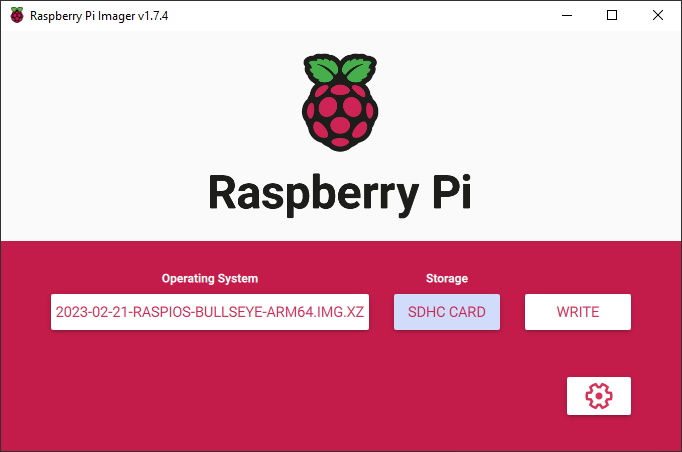
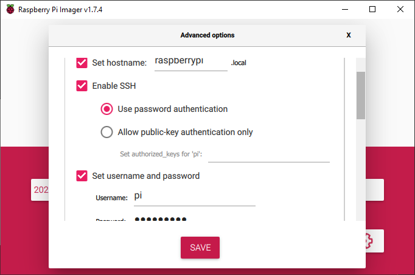
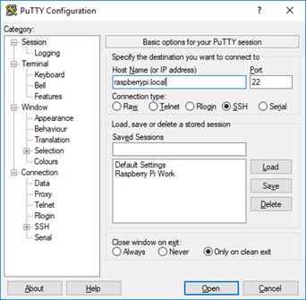

Setting up Raspberry Pi for z-wave-protocol-controller
Note: For reference documentation please refer to related chapter of Z-Wave-Protocol-Controller documentation
Introduction
Here we explain how to set up and running quickly to test out z-wave-protocol-controller on the Raspberry Pi reference platform.
Prerequisites
Raspberry Pi 3+ (4 is the recommended reference hardware)
SD card for Raspberry Pi
SD card reader
IP router with built-in DHCP
Software tools
Raspberry Pi Bookworm OS 64 bit image (Raspberry Pi OS Lite is enough eg:
Set up Raspberry Pi
Prepare the SD card
Insert SD card into SD reader
Use Raspberry Pi Imager to load the image to the SD card (or any lowlevel disk writer eg: dd) 
Click on settings and set the following
Enable SSH
Set username and password
Set hostname (eg: last 4 digit of ethernet address)

Connect to Raspberry Pi
Power up the router. Connect your PC to the router using ethernet or WiFi. Connect the Raspberry Pi to the router using ethernet.
Open a terminal with ssh (such as Putty), and type in either raspberrypi.local or the IP address of the Raspberry Pi in the host name field. After clicking open, click yes to accept the security key, and the default user name is pi and password is raspberry (unless any of this was changed in the previous step when loading the OS image). 
Copy z-wave-protocol-controller to Raspberry Pi
Download the archive package for aarch64 architecture: https://github.com/SiliconLabsSoftware/z-wave-protocol-controller/releases
Unarchive and upload all deb files to target using scp, sftp or just copy to target sdcard.
Install Precompiled packages
Enter the directory of the extracted files and install Unify
Remove the libunify-dev file from the directory then run:
pi@raspberrypi:~ $ sudo apt install etckeeper unp mosquitto mosquitto-clients
pi@raspberrypi:~ $ unp z-wave-protocol-controller_*.zip
pi@raspberrypi:~ $ cd z-wave-protocol-controller_*
pi@raspberrypi:~ $ rm *-dev*.deb # development package not needed
pi@raspberrypi:~ $ sudo apt install ./*deb
Some menu will appear you can rely on default values, or we can adjust in next part of the documentation:¨